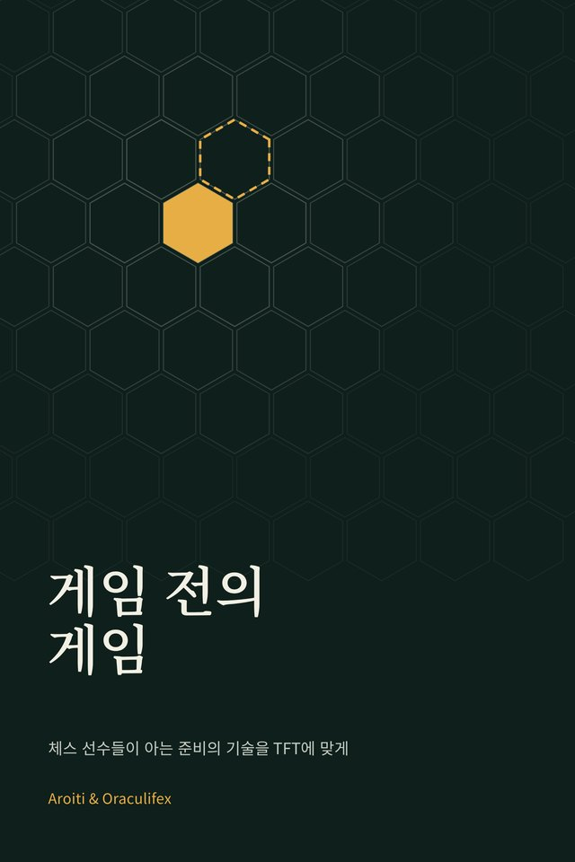
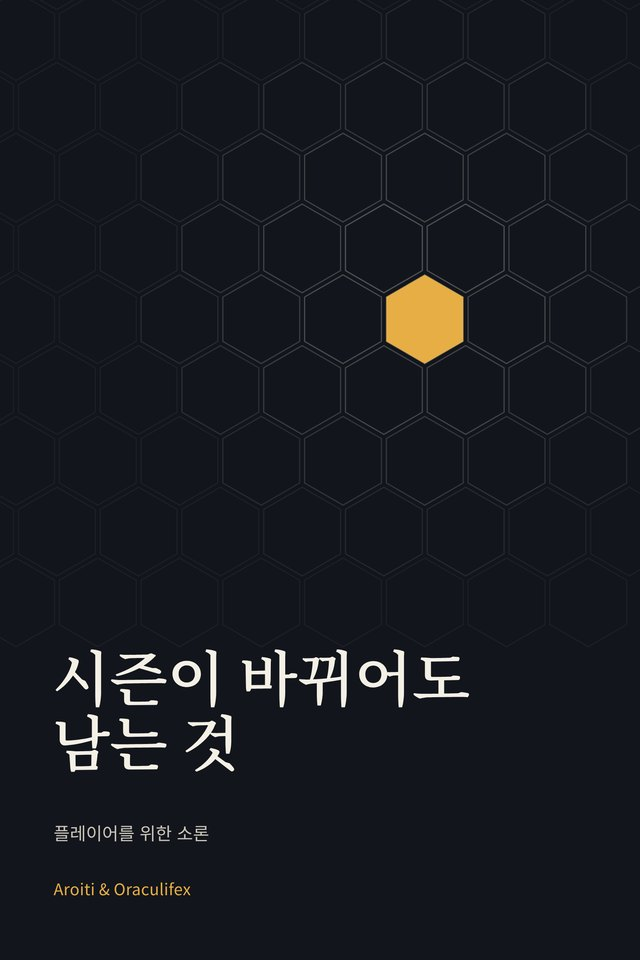

새 책
게임 전의 게임
체스 선수들이 아는 준비의 기술을 전략적 팀 전투에 맞게
체스에서 대국은 첫 수를 두기 전에 이미 시작되는 경우가 많습니다. 이 짧은 에세이는 체스의 한 세기에 걸친 준비법을 빌려 TFT에 맞게 옮깁니다. 레퍼토리, 공부, 당일, 게임, 그리고 게임 후 분석까지.
무료, 가입 없음. 27쪽.

오라클은 Aroiti가 자기 게임을 측정하는 통계 도구입니다. 책의 숫자도 여기서 나왔습니다. 아직 방문자에게 열려 있지 않습니다.
아직 열리지 않았습니다. X에서 Aroiti 팔로우새 책
체스 선수들이 아는 준비의 기술을 전략적 팀 전투에 맞게
체스에서 대국은 첫 수를 두기 전에 이미 시작되는 경우가 많습니다. 이 짧은 에세이는 체스의 한 세기에 걸친 준비법을 빌려 TFT에 맞게 옮깁니다. 레퍼토리, 공부, 당일, 게임, 그리고 게임 후 분석까지.
무료, 가입 없음. 27쪽.


시즌마다 한 권, 그리고 다른 주제도 다룹니다.